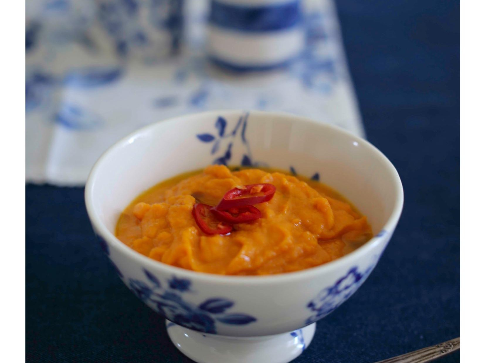

Очень простой и удобный рецепт. Вот он, практичный мужской подход! На основе одного рецепта можно приготовить множество вкуснейших вариаций. Можно даже сделать сразу большую порцию суповой основы и готовить разные варианты несколько дней.
для вариаций: